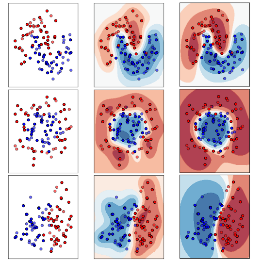
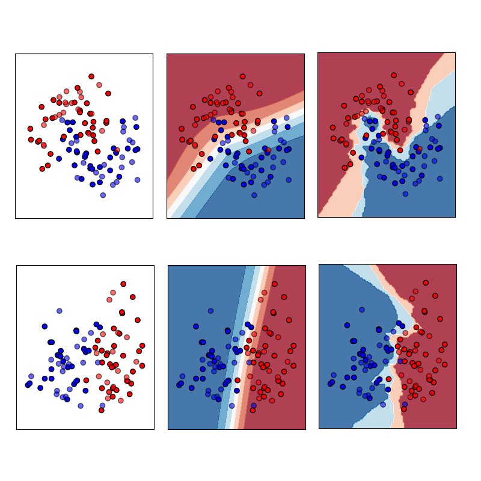

<table style="width:100%;border:0px;border-spacing:0px;border-collapse:separate;margin-right:auto;margin-left:auto;"><tbody>
    <tr>
    <td style="padding:10px;width:100%;vertical-align:middle">
      <h1>Portfolio</h1>

      <div class="portfolio-item">
        
        <p><strong>Witchcraft and Wizardry: Generative AI.</strong><br> 
        Introduction, VAEs, ARMs, Normalizing Flows, Diffusions, and GANs.<br>
        <a href="../blogs/gans.html#main"> read</a> &nbsp-&nbsp
        <a href="../blogs/gans.html#main"> watch</a> &nbsp-&nbsp
        <a href="../blogs/gans.html#main"> github</a> 
        </p>
      </div>

      <div class="portfolio-item">
        
        <p><strong>Less is More: Sparse AI.</strong><br>
        Introduction, Model Sparsity, Data Sparsity, and Label Sparsity.<br>
        <a href="../blogs/gans.html#main"> read</a> &nbsp-&nbsp
        <a href="../blogs/gans.html#main"> watch</a> &nbsp-&nbsp
        <a href="../blogs/gans.html#main"> github</a> 
        </p>
      </div>

      <div class="portfolio-item">
        
        <p><strong>North Remembers: Continual AI.</strong><br>
        Introduction, Regularization, Replay, and Architecture Approaches.<br>
        <a href="../blogs/gans.html#main"> read</a> &nbsp-&nbsp
        <a href="../blogs/gans.html#main"> watch</a> &nbsp-&nbsp
        <a href="../blogs/gans.html#main"> github</a> 
        </p>
      </div>
      
    </td>
    </tr>
</table>        

